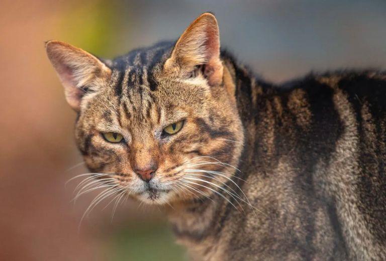
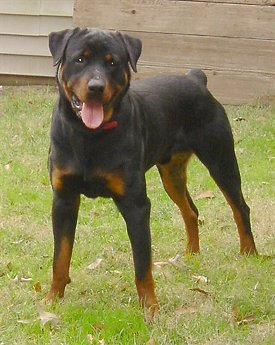
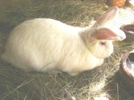
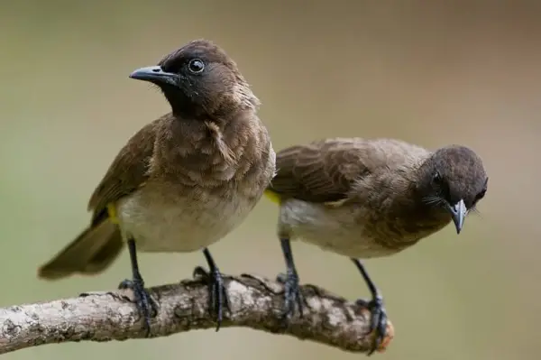

Whiskers Story
Whiskers was adopted by a caring family. Whiskers was found in darka alley malnutrioned after being birthed. She was taken in.She was treated and was better. She found a loving family.

Whiskers was adopted by a caring family. Whiskers was found in darka alley malnutrioned after being birthed. She was taken in.She was treated and was better. She found a loving family.

Max was adopted by a caring family. He is a rottweiler breed.

Rue was adopted by a caring family.

Well was adopted by a caring family. He is a bulbul breed.